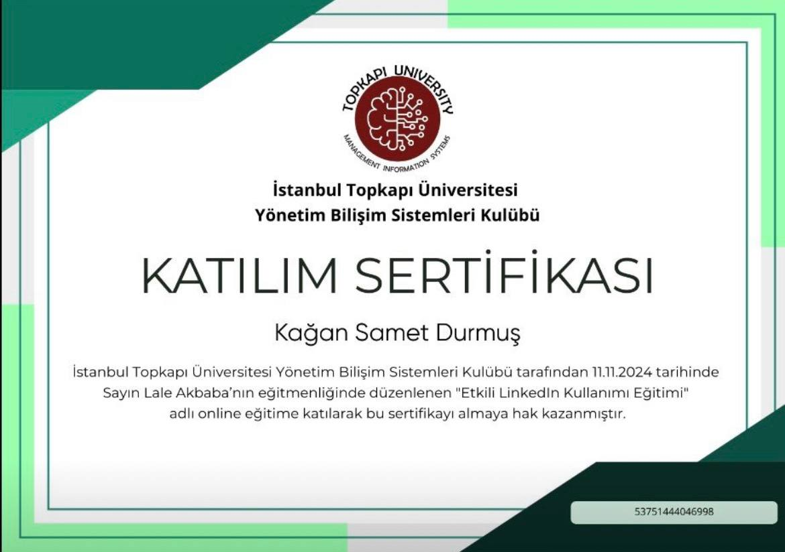

1CI Career Summit
1CI Career Summit ve ödül sürecini belgeleyen çıktı; profesyonel görünürlük ve kariyer odağını güçlendiren bir dönüm noktası.
1CI Career Summit LinkedIn kaydıBu sayfa yalnızca sertifika galerisi değil; projelerin ve yetkinlik kümelerinin dış dünyadaki görünürlüğünü destekleyen proof layer.
1CI Career Summit ve ödül sürecini belgeleyen çıktı; profesyonel görünürlük ve kariyer odağını güçlendiren bir dönüm noktası.
1CI Career Summit LinkedIn kaydı
Toplumsal fayda odağındaki proje ve etkinlik katılımımı gösteren doğrulayıcı içerik.
Toplumsal fayda projesi LinkedIn kaydı
Girişimcilik ve teknoloji ekseninde aldığım eğitimi ve çıktılarını özetleyen sertifika görseli.
Girişimcilik eğitimi LinkedIn kaydı
Innovation Day etkinliğindeki katılımımı ve öğrenim eksenimi yansıtan paylaşım.
Innovation Day LinkedIn kaydı
LinkedIn üzerindeki profesyonel ağımı, paylaşımlarımı ve görünürlüğümü destekleyen profil kaydı.
LinkedIn profil görünürlüğü kaydıBu kayıtlar CV'deki teknik, finansal ve dil öğrenimi zeminini tamamlayan eğitim kanıtlarıdır.
Rusça öğrenimini yalnızca ilgi alanı olarak değil, çok dilli ürün geliştirme ve içerik üretimi için sürdürülen bir yetkinlik olarak konumlandırır.
Excel ve ofis araçlarıyla operasyonel kayıt, raporlama ve iş takibi tarafındaki uygulamalı zemini destekler.
Veritabanı modelleme, SQL ve veri yönetimi odağını akademik derslerin dışında da güçlendiren teknik eğitim kaydı.
ERP sistemleri, iş süreçleri ve yazılım geliştirme arasındaki bağlantıyı destekleyen ürün ve operasyon odaklı eğitim.
Fintech, piyasa araştırması ve kişisel finans okuryazarlığı zeminini güçlendiren finans eğitimi kaydı.
Finansal okuryazarlık odağını destekleyen ek sertifika kaydı; proje sayfalarındaki finans araştırması yönüyle birlikte okunmalı.
Buradaki sinyaller tek başına başarı listesi olarak değil, proje ve yetkinlik sayfalarındaki iddiaları dış dünyada destekleyen referanslar olarak düşünülmeli. Bu yüzden bu sayfa, doğrudan arama niyeti taşıyan proje URL’lerine bağlanan tamamlayıcı bir güven katmanı olarak konumlandı.
Bu sayfa doğrulanamayan iddialar yerine herkese açık referanslar ve sertifika görselleri kullanır. Görevi; dış görünürlük, etkinlik katılımı ve proje çalışmalarını tek bir güven rotasında birleştirerek E-E-A-T sinyalini desteklemektir. Bu yüzden her kartta yalnızca belge, etkinlik veya kamusal profil izine bağlanabilen kanıtlar yer alır; sayfa, portfolyo iddialarını destekleyen doğrulanabilir, düzenli ve bağlamsal bir referans dizini olarak çalışır.
Buradaki görünürlük sinyalleri özellikle FinTechTerms, AskViraBot ve genel yetenek kümeleri ile birlikte okunmalı.